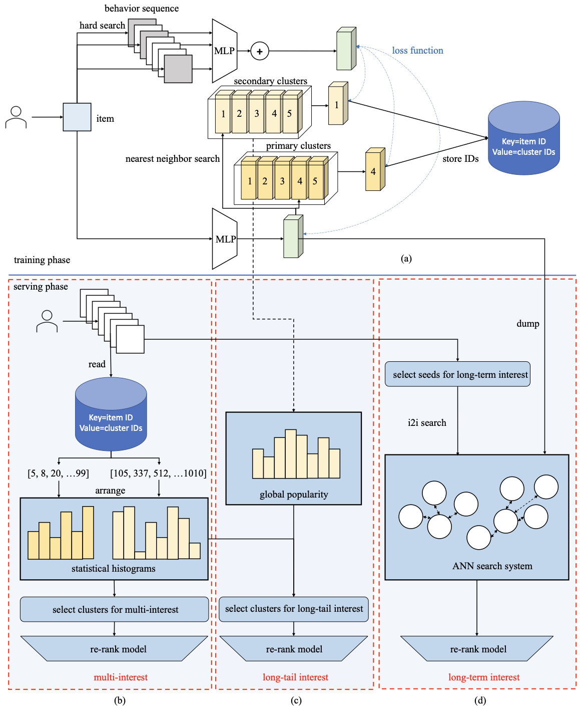

2.3.2. 全量兴趣建模与流式索引¶
上一节介绍的MIND和SDM模型代表了一种“模型内部压缩”的思路：通过多向量表示或长短期分离，尝试在有限的参数空间内尽可能完整地表达用户兴趣。这种方法在一定程度上缓解了单向量的信息瓶颈问题，但当用户行为序列的长度增长到数千甚至数万时，任何固定容量的压缩机制都会面临信息丢失的困境。
与此同时，召回阶段还面临另一个容易被忽视的问题：索引的时效性。传统的向量索引结构需要定期重建，这意味着新提交的内容和用户兴趣的即时变化无法被及时捕捉。在内容快速更迭的平台上，这种延迟可能导致推荐系统错过用户当前的真实需求。
本节将介绍两种跳出“压缩”思路的方法：Trinity和Streaming VQ。前者通过将用户行为投影到聚类空间，用统计直方图来完整保留全量历史兴趣；后者则通过流式更新机制，让索引结构能够实时适应数据分布的变化。这两种方法分别从“广度”和“速度”两个维度推进了召回技术的边界。
2.3.2.1. 聚类统计的全量兴趣召回¶
在推荐系统的研究中，有一种被称为“搜索式兴趣模型” (Pi et al., 2020) 的方法已经证明了一个重要观点：与其将所有历史行为压缩到固定容量的向量中，不如在推理时根据目标物品动态地从历史行为中“搜索”相关信息。这种方法的核心思想是先用轻量级的方式从用户的超长行为序列中筛选出与当前目标相关的子序列，再对这个子序列进行精细建模。通过这种两阶段的搜索机制，模型能够有效处理长达数万条的行为序列。
然而，这类搜索式方法的计算复杂度对于需要处理数十亿候选物品的召回阶段来说仍然过高。Trinity (Yan et al., 2024) 的核心贡献在于将“搜索式”的兴趣建模思想成功地迁移到了召回阶段，通过引入一套基于聚类的统计框架来实现这一目标。
兴趣遗忘问题
在理解Trinity的设计之前，我们需要先认识其试图解决的核心问题。在线学习框架下的召回模型倾向于拟合最近的训练样本，这意味着当某个兴趣主题的训练样本变得稀疏时，模型对该主题的记忆会逐渐衰退。Trinity将这种现象称为“兴趣遗忘”（Interest Amnesia）问题。
更具体地说，用户的多元兴趣、长尾兴趣和长期兴趣这三者之间存在相互依存的关系。长期行为记录能够揭示用户的多元兴趣全貌，因为短期行为往往被热门话题主导；而真正需要关注的多元兴趣实际上是那些尚未被充分推送的长尾主题，因为热门内容已经被现有召回器很好地覆盖；同时，判断用户是否真正对某个长尾主题感兴趣，也需要回溯长期行为来确认。
聚类系统的构建
Trinity的基础是一套层次化的物品聚类系统。如 图2.3.3 所示，训练阶段采用向量量化（Vector Quantization） (van den Oord et al., 2018) 结构来学习物品的聚类归属。对于每个物品，系统首先从用户的长期行为序列中提取与该物品相关的历史交互，得到物品embedding \(\mathbf{x}\) 和用户embedding \(\mathbf{b}\)。同时，系统维护两级可学习的聚类中心：粗粒度的主聚类 \(\{\mathbf{e}^1_j\}_{j=1}^J\) 和细粒度的次级聚类 \(\{\mathbf{e}^2_k\}_{k=1}^K\)，其中 \(J=128\)，\(K=1024\)。
{kind=link}

图2.3.3 Trinity框架整体结构。训练阶段（a）通过VQ-VAE构建层次化聚类系统；服务阶段基于用户行为的统计直方图实现多元兴趣召回（b）、长尾兴趣召回（c）和长期兴趣召回（d）。¶
每个物品通过最近邻搜索被分配到对应的聚类：
训练损失函数同时优化用户-物品匹配和用户-聚类匹配：
其中 \(\sigma(\cdot)\) 是sigmoid函数，\(y=1\) 表示用户完成观看、产生互动（点赞/分享/关注/评论）或观看时长超过10秒。聚类中心的更新采用指数移动平均机制(Exponential Moving Average, EMA) (van den Oord et al., 2018) ：不直接通过梯度更新聚类中心，而是用其所属物品embedding的加权平均来更新，这样聚类中心能够平滑地适应物品分布的变化。
这套聚类系统的关键特性在于其时间无偏性。由于训练过程中同时使用了用户的长期行为序列，近期物品和早期物品被同等对待，不会出现传统在线学习中对近期样本的过度偏向。
基于直方图的兴趣召回
有了物品到聚类的映射关系，Trinity就可以将任意长度的用户行为序列转换为固定维度的统计直方图。对于用户的长期行为序列（长度可达2500），系统从键值存储中读取每个物品的聚类ID，然后统计每个聚类的行为计数，形成主聚类直方图 \(\mathbf{h}^1 = [h^1_1, h^1_2, \ldots, h^1_J]\) 和次级聚类直方图 \(\mathbf{h}^2 = [h^2_1, h^2_2, \ldots, h^2_K]\)。
将直方图按计数降序排列后，用户的兴趣分布一目了然。例如，若排序后的直方图为 \([50, 20, 20, 4, 2, 0, 0, 0]\)，对应的聚类索引为 \([10, 33, 100, 91, 62, 21, 5, 83]\)，则聚类10是用户的主要兴趣，聚类33和100构成需要关注的多元兴趣，聚类91和62是探索性兴趣，其余聚类可以忽略。
基于这种直方图表示，Trinity设计了三个互补的召回器。第一个是多元兴趣召回器（Trinity-M），其核心策略是选择那些计数显著但可能被主流召回器忽略的聚类。为了保证主题多样性，系统限制每个主聚类下最多选择一个次级聚类，起到分散化的作用。这种设计确保了召回结果不会被头部兴趣主导，从而唤醒那些被“遗忘”的兴趣主题。
第二个是长尾兴趣召回器（Trinity-LT），它需要首先识别哪些聚类属于全局长尾主题。Trinity采用流式频率估计方法来追踪每个聚类的出现间隔：
其中 \(A[\mathcal{H}(c_k)]\) 记录聚类 \(c_k\) 的上次出现时间戳，\(B[\mathcal{H}(c_k)]\) 是出现间隔的移动平均。出现间隔大的聚类代表长尾主题。当用户在这些长尾聚类上有显著的行为计数时，说明该用户是这类小众内容的真正受众，系统会增强对这些内容的推送。
第三个是长期兴趣召回器（Trinity-L），它利用训练得到的物品embedding构建物品到物品（Item-to-Item）的检索系统。系统首先通过一个轻量级的双塔模型从用户的长期行为中选择种子物品，然后基于Trinity embedding的相似度检索与种子物品相关的其他物品。由于Trinity embedding本身就编码了长期行为信息，因此能够有效召回与用户历史偏好相关的内容。
与多向量方法的对比
Trinity与MIND等多向量方法在目标上有相似之处，都试图捕捉用户的多元兴趣，但实现路径截然不同。多向量方法（如MIND的多个用户表示头）通过在线学习框架训练多个用户embedding，每个embedding负责捕捉一类兴趣。然而这种方法存在几个问题：首先，不同的头可能重复检索相同的热门内容，导致计算效率随头数增加而下降；其次，每个头的语义含义不够明确，难以进行针对性的策略调整；最后，模型无法灵活地扩展到长尾兴趣或长期兴趣建模。
相比之下，Trinity将物品排他性地分配到聚类中，增加关注的兴趣主题只会带来线性的额外开销。同时，每个聚类具有明确的语义含义（如教育、旅游、科技等），便于理解和调控。更重要的是，基于统计直方图的方法天然不会“遗忘”任何兴趣主题，因为只要用户历史中存在相关行为，对应聚类的计数就不会为零。
2.3.2.2. 实时更新的流式索引¶
Trinity通过聚类统计解决了全量兴趣建模的问题，但索引结构本身的时效性问题仍然存在。传统的向量索引需要定期重建，在此期间物品到索引的映射关系保持固定。然而在快节奏的内容平台上，新内容不断涌入，热点话题快速更迭，固定的索引结构无法及时反映这些变化。
Streaming VQ (Bin et al., 2025) 提出了一种流式更新的向量量化索引结构，使物品能够实时被分配到合适的聚类中，同时聚类中心也能持续适应数据分布的变化。
流式索引的核心机制
如 图2.3.4 所示，Streaming VQ的训练框架包含两个步骤：索引步骤和排序步骤。在索引步骤中，系统采用双塔架构生成用户侧embedding \(\mathbf{u}\) 和物品侧embedding \(\mathbf{v}\)。首先通过一个辅助任务优化这两个embedding：
这是一个in-batch对比学习损失，它使物品embedding能够在不依赖聚类的情况下独立学习语义表示，为后续的流式索引更新提供稳定的基础。

图2.3.4 Streaming VQ训练框架。索引步骤通过VQ编码将物品分配到聚类，排序步骤使用更复杂的模型对聚类内物品进行进一步筛选。¶
然后，物品embedding通过最近邻搜索被量化到聚类：
其中 \(Q(\cdot)\) 表示量化操作。量化后的聚类中心 \(\mathbf{e}\) 也参与用户-聚类匹配的优化：
物品到聚类的映射关系被实时写入参数服务器（Parameter Server），聚类中心则通过指数移动平均机制（EMA）更新（即用所属物品embedding的加权平均来平滑更新聚类中心）。这种设计使得整个索引结构能够随着训练流程实时更新，无需中断式的重建操作。
索引的可修复性
流式更新带来了即时性的优势，但也引入了新的风险：没有定期重建来“重置”系统状态，模型可能逐渐退化。原始VQ-VAE通过相似性损失 \(L_{sim} = \sum_o ||\mathbf{v}_o - \mathbf{e}_o||^2\) 来约束物品embedding和聚类中心的距离。然而在推荐场景中，数据分布会随时间漂移，物品的聚类归属本身就应该是动态变化的，\(L_{sim}\) 反而会阻碍这种必要的变化。
Streaming VQ的解决方案是用 \(L_{aux}\) 替代 \(L_{sim}\)。\(L_{aux}\) 使物品embedding能够独立于聚类中心进行更新，然后 \(L_{ind}\) 再根据更新后的物品分布调整聚类中心。这种“物品优先”的设计原则确保了聚类结构能够持续适应数据分布的变化，而不是将物品锁定在可能已经过时的聚类中。
索引平衡性
召回模型的另一个重要目标是将热门物品均匀分布在不同的聚类中，以便通过选择少数聚类就能快速缩小候选集规模。然而，许多现有方法都面临流行度偏差问题，导致热门物品聚集在少数头部聚类中。
Streaming VQ通过多种机制来促进索引平衡。首先，\(L_{ind}\) 是用户-聚类匹配的softmax损失，热门物品占据了绝大多数的训练样本。如果热门物品都聚集在少数聚类中，这些聚类中心需要同时代表大量语义各异的物品，导致表示变得模糊、匹配精度下降。而将热门物品分散到更多聚类中，每个聚类中心只需代表更少、更一致的物品，匹配损失自然更低。因此，\(L_{ind}\) 的优化过程本身就倾向于产生均衡的索引分布。
其次，Streaming VQ在聚类中心的EMA更新机制中引入了流行度调节项。回顾前文，物品通过量化被分配到聚类后，聚类中心 \(\mathbf{e}^k\) 会通过EMA机制更新。具体来说，Streaming VQ维护每个聚类的累积表示 \(\mathbf{w}_k\) 和累积计数 \(c_k\)：
其中 \(\mathbf{v}_j\) 是被分配到聚类 \(k\) 的物品embedding，\(\delta^t\) 是该物品的出现间隔估计值（冷门物品的间隔更大）。最终的聚类中心通过归一化得到：\(\mathbf{e}^k = \mathbf{w}_k / c_k\)。当 \(\beta > 0\) 时，冷门物品在更新中获得更大的权重，使得聚类中心不会完全被热门物品主导，从而改善索引的平衡性。
此外，Streaming VQ对前述的量化公式进行了改进，在最近邻搜索中引入扰动机制：
其中 \(c_k\) 是聚类 \(k\) 的累计出现次数，\(s\) 是一个阈值参数。当某个聚类的样本量低于平均值的 \(1/s\) 时，折扣系数 \(r\) 小于1，使得该聚类在距离计算中“更近”，从而更容易吸引物品加入。
归并排序的服务策略
在服务阶段，Streaming VQ将物品embedding显式地分解为个性化部分和流行度部分：
其中 \(v_{bias}\) 是物品的独立可学习偏置，刻画与用户无关的全局受欢迎度，\(Q(\mathbf{v}_{emb})\) 则承担个性化匹配。这样的分解让聚类本身保持“按语义分组”，而不被热门度拉偏，同时在同一聚类内可以用 \(v_{bias}\) 做初步排序。基于此，Streaming VQ采用归并排序策略来高效地选择候选物品：首先，\(\mathbf{u}^T \cdot Q(\mathbf{v}_{emb})\) 提供聚类级别的排序；然后，\(v_{bias}\) 提供聚类内物品的排序。通过最大堆实现的K路归并排序，系统可以确保所有聚类都有机会贡献候选物品，即使某些聚类的物品数量超过了后续处理步骤的输入限制。
这种策略使Streaming VQ能够以较小的候选规模（相比其他方法）达到更好的召回效果，因为平衡的索引结构保证了候选集的多样性，归并排序则确保了每个聚类的优质物品都能被考虑。